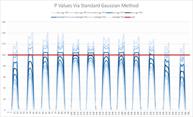
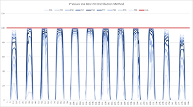
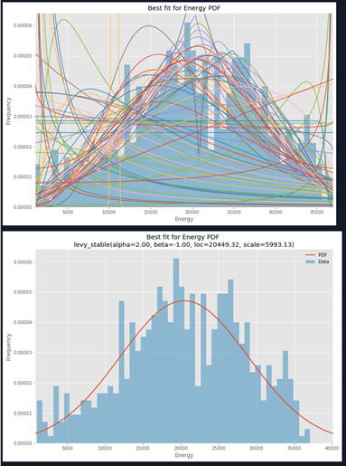
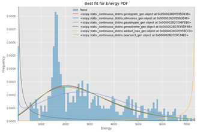
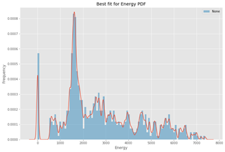

Hourly Variability of PV Performance
A Comparison of Gaussian, Parametric Best Fit, and Kernel Density Estimate Approaches to Estimating the Hourly Variability of PV Plant Peformance
Introduction
As the complexity of offtake contracts for grid scale solar energy increases, it becomes necessary to understand the long term hourly variability of plant performance in order to better determine the likelihood of over or under producing the contracted amount during specific times of day. EDFR has developed two methods for quantifying the risk of over and underproduction on an hourly timescale. The first method matches the long term modeled data to a best fit parametric probability density function and then combines each month-hour into a larger variability distribution via monte carlo. The second method uses a 1 dimensional kernel density estimation technique to model the variability of the long term dataset and then combines each month-hour in the same way. The resulting probability density functions and their accompanying cumulative distribution functions can be used to determine the relevant P-Values of hourly plant perfomance.
Methodology
In order to determine the likelihood of producing a certain amount of energy during a certain month and hour of the year, we first created a 19 year backcast of PV plant production using a satellite data source, specific plant design parameters and PVSyst. The plant analyzed as an example in this paper was a 1.36 DC / AC ratio, single axis tracker system in the United State`s desert southwest region with a 100 MW large generator interconnection agreement (LGIA). This data was then aggregated via a python script into a month-hour (12x24) dataset. A 12x24 scheme was chosen as it provided more datapoints than the altenative 8760 scheme which would only give 19 datapoints per hour, though we do note that the 12x24 does have an increased possible distribution spread due to differences in solar geometry during a given month as well as local climatological variables. Each dataset contains 19 months * (n) number of days in the month data points resulting in approximately 570 data points per dataset.
Because a gaussian probability density function poorly fits the resulting modeled dataset it is necessary to find an alternative distribution for each month-hour. One intuitive method for finding this distribution used by EDFR was to fit predetermined parametric probability density functions to the data and select the best one via minimization of sum square error. Using this method we attempted to fit 98 different distributions and found that 6 was the minimum number of distributions needed to properly fit the varieties of solar production data. All 98 distributions could be used, but requires significantly more computation time for a diminishing return of distribution fit. The six different distributions selected were: Johnson SU, Generalized Logistic, Pearson 3, Gaussian Hyper Geometric, Generalized Extreme Value and Weibull Maximum.
Unfortunately, even the full set of parametric distributions was not sufficient to properly model the variability of hourly performance. Due to this fact, an alternative method was also developed to fit the modeled dataset in order to account for the possibility of poor fit from the parametric probability density functions. In this method, a 1 dimensional kernel density estimation was performed on the dataset and the resulting distribution was used in the same way in order to find the final production P-Values. The kernel estimation was implemented with the KDEpy package with multiple kernels and bandwidth estimation algorithms attempted.
Results
| Figure | Description |
|---|---|
 |
Using a gaussian distribution instead of a best fit distribution resulted in unwanted artifacts such as P Values which allow generation above the plant LGIA, and P Values which allow negative generation. |
 |
P Values using a best fit distribution method. The red line is the plant LGIA. P Values spreading away from P50 are represented by successions of lighter blue lines. |
 |
98 Possible distributions tested on an example month-hour with one parametric distribution chosen |
 |
Example of the poor fit of parametric distributions during am example month-hour |
 |
Example of improved fir of kernel density estimates during the same month-hour |